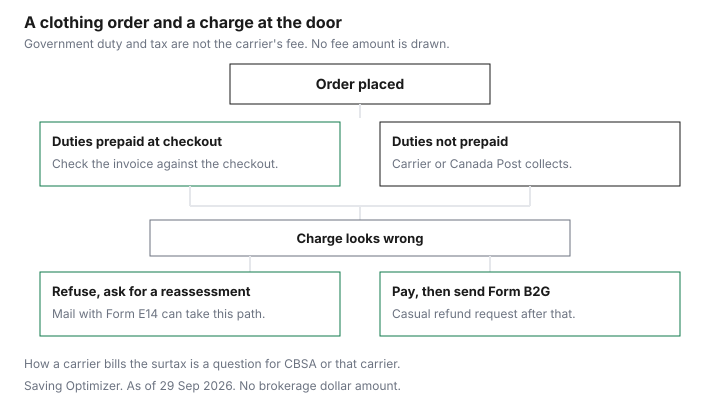

Clothing · Canada
Courier Brokerage Fees on Clothing Orders: How to Avoid Surprise Charges at the Door
The charge at the door is often two bills stapled together. One is the government’s: duty, and on some US-origin goods a surtax, and GST, HST or PST. The other is the carrier’s: brokerage, clearance or a handling fee. People argue with the wrong one. This page splits them for clothing orders, says what you can refuse, and points the refund at the form CBSA actually uses. It does not quote a courier’s dollar fee unless that carrier’s page is the source. UPS, FedEx, Purolator and DHL amounts are “See carrier.” How any carrier bills the surtax stays check with the CBSA Border Information Service at 1-800-461-9999 or your carrier. The clothing math for the surtax itself is the US clothing guide. Cosmetics are the US beauty guide.
Key takeaways
- Duty, surtax and sales tax are government amounts. Brokerage and handling are the carrier’s. CBSA will not refund the carrier’s fee. The dispute page says so.
- Canada Post’s handling fee is CAN$9.95 on a mail item that is dutiable or taxable, on the page checked 29 Sep 2026. CBSA’s mail page says no amount is charged when the item is duty-free and tax-exempt.
- Mail at $20 and under is duty- and tax-free. Courier from the US or Mexico: up to $40 duty- and tax-free, above $40 to $150 duty-free but taxed, above $150 both. Those bands do not exempt the surtax on US-origin goods.
- With Form E14 you can refuse the parcel and ask for a reassessment, or pay and send Form B2G to a Casual Refund Centre. Page modified 13 August 2021, checked 29 Sep 2026.
- A “duties paid” checkout is the seller’s lines, not an assessment. If surtax is not listed, do not assume it was prepaid. A return of the garment is not automatically a refund of duty. Check with CBSA.
What brokerage is and who charges it
Brokerage is the work of accounting for the goods: classifying them, declaring the value, and arranging payment of what is owed. A courier may do that for a personal shipment.
CBSA’s “Importing by mail” page says so, and it says to verify shipping and handling fees before you finish the purchase. The fee for that work is the carrier’s price. It is not a line in the Customs Tariff.
Canada Post is the mail case, and it prints a number. Its customs page, checked 29 Sep 2026, says it applies a handling fee of CAN$9.95 per dutiable or taxable mail item. You can pay online when the item is eligible, or at delivery or pickup. Payment methods on that page include credit card online, and at the post office cash, debit, credit, cheque or money order. CBSA still does the assessment. Canada Post collects. If the item is not dutiable and not taxable, CBSA’s mail page says no amount is charged. A $9.95 fee on a parcel that owed nothing is a question for Canada Post, not a second duty.
Courier fees are not copied from Canada Post. See the carrier’s own fee page for UPS, FedEx, Purolator or DHL before you accept a brokerage amount. This guide does not state those amounts. Paragraph 18 of Customs Notice 26-23 says amounts for Canadian customs brokerage fees that are included in the price paid or payable may be deducted as associated costs and are not included in the transaction value. That stops the fee from being taxed as if it were part of the goods, when the rule’s conditions are met. It does not erase the fee. Estimates of transportation costs are not acceptable for that valuation. The notice points to the valuation memoranda.
Postal vs courier shipping choices
Mail and courier are different thresholds, and the choice is the seller’s shipping method, which you sometimes see at checkout and sometimes do not. Mail: $20 and under, duty- and tax-free from any country.
Above $20, duties and taxes, and Canada Post’s $9.95 if an amount is owed. The amount owed shows on Form E14 attached to the item. Courier from the United States or Mexico, after the goods entered that country’s commerce: up to $40 duty- and tax-free, above $40 to $150 duty-free with tax, above $150 both. Courier from anywhere else, including a transshipment that never entered US or Mexican commerce: the $20 line. Memorandum D8-2-16, paragraphs 11 and 12, are that commerce test. The full table is on the overseas clothing guide and the US clothing guide.
Neither set of bands turns off the surtax. Paragraph 9 of Customs Notice 26-23 says the surtax applies to US-origin goods including shipments under the de minimis thresholds, and paragraph 29 says those goods must be accounted for. Paragraph 17 says GST is calculated on a value for tax that includes the surtax even when customs duties are remitted, and that GST is not payable on a non-taxable importation even if surtax applies. That is why a US courier order at or under $40 can show no ordinary GST and still be a surtax question if the goods are marked as US goods. How the courier collects that surtax, and whether it adds brokerage, is check with CBSA or the carrier. Goods marked as originating in Puerto Rico, Guam, the Northern Mariana Islands, American Samoa or the US Virgin Islands are excluded from the surtax.
'Duties paid' vs 'duties unpaid' checkouts
Read the checkout as a list, not as a badge. “Duties paid,” “taxes included” and “delivered duty paid” are the seller’s words.
Write down whether the lines include ordinary duty, GST or HST, and the surtax if the garment is marked as a good of the United States. The apparel lines on the 50 percent schedule are specific. The list covers specific tariff lines, not all clothing. Footwear is not on it. Whether your parcel is one of the lines is classification: check with CBSA. A prepaid total that matches only the GST, and not a surtax the marking would suggest, is a reason to pause, not a reason to invent the carrier’s fee.
Unpaid means the carrier or Canada Post will collect later. Budget the government amounts from the verified rules, and budget the carrier fee only from that carrier’s page. If you cannot find the fee page, the honest cell is “See carrier,” and the honest act is to ask before you pay the store. The shipping and return-fee guide is the domestic postage version of the same pause.
| Charge | Who sets it | What the cited page says |
|---|---|---|
| Customs duty | Government, from the Customs Tariff | Most listed apparel lines are 18 percent most-favoured-nation, 17 percent on 6211.32. US tariff treatment on those lines is Free when it applies. Whether your item qualifies is check with CBSA. Under the low-value bands, ordinary duty may be remitted. Above the band, duty can apply to the entire value. |
| Surtax | Government, United States Surtax Order (2026) | 15, 25 or 50 percent of the value for duty, by schedule, on US-origin goods, in force 8 September 2026. Applies under the de minimis thresholds. How it is collected on a small order: check with CBSA or your carrier. |
| GST, HST or PST | Government | GST in Customs Notice 26-23’s examples is 5 percent of value for tax, which includes the surtax. Provincial tax can also apply. No GST on a non-taxable importation even if surtax applies. |
| Canada Post handling | Canada Post | CAN$9.95 per dutiable or taxable mail item, Canada Post customs page, checked 29 Sep 2026. Not charged when the item is duty-free and tax-exempt, on CBSA’s mail page. |
| Courier brokerage or clearance | The courier | See carrier. UPS, FedEx, Purolator and DHL amounts are not stated here. |
Refusing a package: what happens
Mail with Form E14 is the path CBSA describes in “Disputing duty and taxes,” modified 13 August 2021. You can refuse the parcel and request a reassessment before you pay.
Ask Canada Post to return the goods to CBSA. Canada Post takes your phone number and a form. CBSA contacts you. If nothing is owed, Canada Post delivers the parcel. If an amount is owed, you pay when it is delivered. Canada Post’s customs page adds a practical warning: if you choose the return-to-CBSA option, the parcel is not released until the review is finished, so you wait. Paying and appealing means you have the item while the adjustment is processed.
Refusing a courier shipment is the carrier’s process plus CBSA’s. Do not assume the mail steps are the courier steps. Ask the carrier what refusal does to the brokerage fee and to the return of the goods to the seller. A seller may treat a refusal as your cost. Read that term before you order. The chart puts refusal and Form B2G on the mail path CBSA wrote down, and it sends every other “this charge looks wrong” question to the same fork: reassess before paying, or pay and adjust.
Getting refunds for overcharges
If you paid, the casual form is B2G, CBSA Informal Adjustment Request, printed on the back of the top copy of Form E14. Send it with invoices or other descriptions to the Casual Refund Centre listed on the form.
CBSA reviews the claim. The note on the dispute page is the one people miss: CBSA will not refund any broker’s fees or shipping and handling costs. Contact the courier or Canada Post for those policies. Canada Post’s pay-duty terms say an adjustment of the duty and tax amount is a CBSA matter, and they describe a handling-fee refund in narrow cases on that terms page, including a double collection and a lost item. Read the current terms before you expect the $9.95 back.
A later return of the clothing to the store is a different file. CBSA’s “Request a refund or adjustment of duties and taxes paid,” modified 5 January 2026, covers personal-use claims. Whether your return qualifies is check with CBSA. Customs Notice 26-23 says a casual adjustment uses Form B2G and cannot be sent through CARM. The imposition of the surtax is not itself subject to appeal under the Customs Tariff or the Customs Act. Determinations of the amount can be. Paragraph 37 says that. Travellers who carried the clothes home in their baggage are out of scope here. Paragraph 23 points to the Guide for residents returning to Canada. Use that guide. The household counter-tariffs guide is the non-apparel version of the Order.
| What the checkout says | What to do before you pay the store | If the door charge looks wrong |
|---|---|---|
| Duties and taxes prepaid | Read every line. Confirm whether surtax is included if the goods are marked as US goods. | Keep the invoice. A casual overcharge still uses the CBSA adjustment path, not only the seller’s chat. |
| Duties unpaid, or silent | Expect collection at delivery. Verify the carrier’s fee. See carrier if the fee page is not in front of you. | Mail, Form E14: refuse and ask for a reassessment, or pay and send Form B2G. Courier: ask that carrier, then the same CBSA choice if an E14 or a casual assessment is what you received. |
| You already paid and then returned the clothes | The store refund is not a duty refund. | Personal-use refund page, modified 5 January 2026. Whether you qualify: check with CBSA. The broker’s fee is not in CBSA’s refund. |

Sources & date stamps
- CBSA, low-value shipment thresholds, modified 2025-11-25, checked 29 Sep 2026.
- CBSA Memorandum D8-2-16, 15 November 2024, checked 29 Sep 2026. Paragraphs 11 and 12 on commerce versus transshipment.
- CBSA, Importing by mail, checked 29 Sep 2026. Form E14. Courier may handle customs details. Verify fees before you buy. No charge when duty-free and tax-exempt.
- CBSA, Determining duty and taxes owed, checked 29 Sep 2026. Gift rule is separate and is not a brokerage rule.
- CBSA, Disputing duty and taxes, modified 13 August 2021, checked 29 Sep 2026. Refuse and reassess, or pay and Form B2G. No refund of broker’s fees or shipping and handling.
- CBSA, Request a refund or adjustment of duties and taxes paid, modified 5 January 2026, checked 29 Sep 2026. Personal use. A specific return: check with CBSA.
- CBSA Customs Notice 26-23, 7 September 2026, checked 29 Sep 2026. Paragraphs 9, 17, 18, 23, 29, 33 and 37. Border Information Service 1-800-461-9999.
- Canada Post, Customs duty, taxes, and exemptions, checked 29 Sep 2026. Handling fee CAN$9.95. Two options that match the E14 choice.
- Carrier brokerage schedules for UPS, FedEx, Purolator and DHL are not cited. See carrier.
Frequently asked questions
What is a brokerage fee?
It is a charge for someone else preparing the customs paperwork on a shipment. CBSA’s mail page says that for personal goods a courier company may take care of the customs details, and it tells you to verify shipping and handling fees before you complete the purchase. Canada Post’s own page, checked 29 September 2026, calls its mail charge a handling fee of CAN$9.95 on an item that is dutiable or taxable. A courier’s brokerage or clearance fee is whatever that carrier prints. This guide does not quote UPS, FedEx, Purolator or DHL amounts. See the carrier.
Is a brokerage fee a government charge?
No. Duty, surtax and GST, HST or PST are government amounts. A brokerage or handling fee is the carrier’s. CBSA’s dispute page says the agency will not refund a broker’s fee or shipping and handling costs, and it tells you to contact the courier or Canada Post about those. Customs Notice 26-23, paragraph 18, says Canadian customs brokerage fees included in the price paid or payable may be deducted from the transaction value. That is a valuation point, not a statement that the fee is a tax. How a carrier bills the surtax on a small order is check with CBSA at 1-800-461-9999 or your carrier.
How do I avoid paying at the door?
Read the checkout before you pay. If it says duties and taxes are prepaid, open the lines and see whether duty, tax and any surtax are actually listed. A badge that does not mention surtax has not answered the surtax. If the checkout says duties are unpaid, expect the carrier or Canada Post to collect at delivery, plus whatever handling fee that carrier publishes. Canada Post lets you pay a dutiable mail item online before delivery, on the page checked 29 September 2026. Verify the fee on the carrier’s page. The low-value bands still decide whether ordinary duty and tax are remitted. They do not remit the surtax on US-origin goods.
What if I was charged duty I don't owe?
For mail with Form E14, CBSA’s dispute page gives two paths. Refuse the parcel and ask for a reassessment: Canada Post returns it to CBSA, CBSA calls you, and you pay only if CBSA still says an amount is owed. Or pay, and request an adjustment on Form B2G, which is on the back of the E14, sent to a Casual Refund Centre. Canada Post’s customs page describes the same two choices and warns that a refused parcel is not delivered until the review is done. The surtax itself is not appealed under the Customs Tariff, Customs Notice 26-23, paragraph 37. A wrong amount of surtax can still be corrected. Check with CBSA.
Can I get duty back if I return the item?
Maybe, and only through CBSA, not through the store’s refund. The page “Request a refund or adjustment of duties and taxes paid,” modified 5 January 2026, is the personal-use starting point. Whether a particular return qualifies is check with CBSA. Casual adjustments use Form B2G and cannot go through CARM, which is Customs Notice 26-23’s instruction for casual goods. CBSA will not refund the broker’s fee or the shipping and handling. Ask the carrier about that part. A store credit is not a duty refund.
Researched and drafted with AI assistance and fact-checked against official Canadian sources. How we create content.